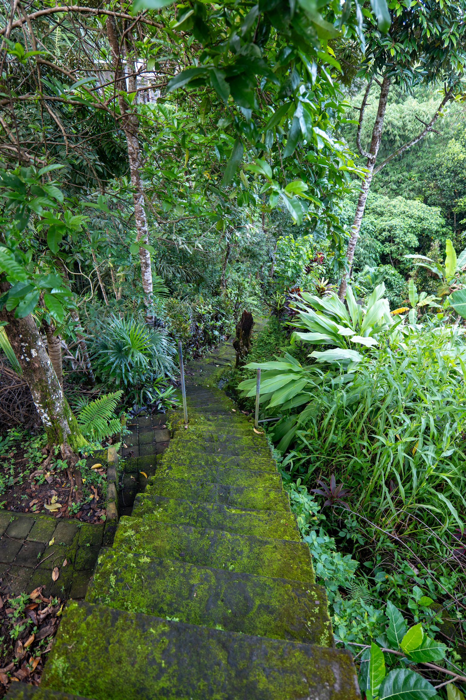

Zwischen den Bergen der Schweiz und dem Herzen Balis — die Geschichte hinter Awakened Touch.
Between the mountains of Switzerland and the heart of Bali — the story behind Awakened Touch.

Meine Ausbildung zum Tantramasseur habe ich in Bern, Schweiz, absolviert — mit grosser Sorgfalt, Tiefe und Respekt vor dieser jahrtausendealten Kunst. Seither bilde ich mich laufend weiter, um meine Arbeit auf einem fundierten, professionellen Fundament zu halten.
I completed my training as a tantra masseur in Bern, Switzerland, with great care, depth and respect for this ancient art. Since then, I continue my education regularly to keep my practice grounded and professional.
Heute lebe und arbeite ich in Ubud, Bali — einem Ort, der von Ritual, Natur und spiritueller Tiefe durchdrungen ist. Die balinesische Lebensweise prägt meine Arbeit ebenso wie meine Schweizer Ausbildung: Struktur und Hingabe, Präzision und Herz.
Today I live and work in Ubud, Bali — a place infused with ritual, nature and spiritual depth. The Balinese way of life shapes my work just as much as my Swiss training does: structure and devotion, precision and heart.
Meine Arbeit ist eine Einladung: still zu werden, dem eigenen Körper zu vertrauen und Berührung ohne Erwartung zu erfahren.
My work is an invitation: to become still, to trust your own body, and to experience touch without expectation.

In unserem Alltag ist Berührung fast immer zielgerichtet: schnell, funktional, mit einem Zweck. In meiner Arbeit lade ich dich ein, genau das loszulassen. Absichtslose Berührung bedeutet, dass keine Stelle deines Körpers „bearbeitet" werden muss — sie darf einfach gespürt werden.
In everyday life, touch is almost always goal-oriented: quick, functional, purposeful. In my work, I invite you to let go of exactly that. Touch without intention means no part of your body needs to be “worked on” — it is simply allowed to be felt.
Aus dieser Freiheit heraus entsteht oft das, was am meisten heilt: echte Entspannung, tiefe Ruhe und ein Gefühl von Sicherheit, in dem sich Körper und Gefühl neu ordnen dürfen.
From this freedom often arises what heals the most: genuine relaxation, deep stillness, and a sense of safety in which body and emotion can find a new order.
Ich begegne dir mit ungeteilter Aufmerksamkeit — ohne Ablenkung, ohne Agenda, ganz im Moment.
I meet you with undivided attention — no distraction, no agenda, fully in the moment.
Ein geschützter Raum ist die Voraussetzung für echte Öffnung. Dein Tempo bestimmt den Weg.
A protected space is the foundation for real opening. Your pace sets the path.
Sexuelle Energie darf als Lebenskraft erfahren werden — jenseits von Scham, Leistung oder Trauma.
Sexual energy may be experienced as life force — beyond shame, performance or trauma.
Jede Sitzung ist ein Schritt auf deinem eigenen Weg — sinnlich, respektvoll und ganz individuell.
Every session is a step on your own path — sensual, respectful and entirely individual.
Diese Arbeit ist eine bewusste, professionelle Körperarbeit — keine sexuelle Dienstleistung. Jede Sitzung basiert auf gegenseitigem Respekt, Konsens und klarer Kommunikation. Grenzen werden jederzeit gehört und geachtet, deine Sicherheit und Würde stehen an erster Stelle. Vor jeder Sitzung findet ein Vorgespräch statt, in dem wir gemeinsam klären, was du dir wünschst und was für dich stimmig ist.
This work is conscious, professional bodywork — not a sexual service. Every session is based on mutual respect, consent and clear communication. Boundaries are heard and honoured at all times; your safety and dignity always come first. Every session begins with a conversation in which we clarify together what you wish for and what feels right for you.
Ich beantworte sie gerne persönlich, bevor du dich entscheidest.
I'm happy to answer them personally before you decide.
Kontakt aufnehmenGet in Touch